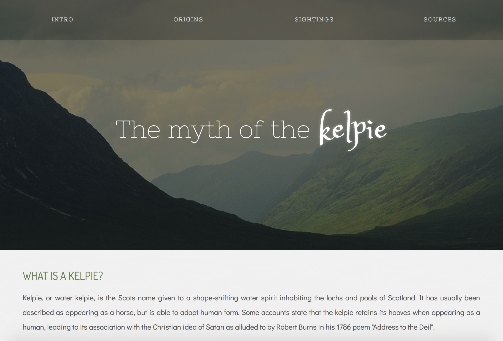

Status: Complete
A clean and simple design for a personal blog. Features a sticky sidebar navigation.
Built with Bootstrap & fully responsive. Currently being used for my knitting/crafting blog!
Status: Complete
A one-page design for an essay about multimodal communication,
specifically co-speech gestures. Features lively colours and some
special effects.
Status: Complete
An elegant design suited to, for example, a dog kennel. Features a
navigation bar and a big header. Built using Bootstrap — yes, it's responsive!
Status: Complete
The perfect simplistic but rich design for a personal blog. Built using
Bootstrap to be responsive and thus adapt to any device. Features a big,
showy header and a sidebar navigation.
Status: Under construction
A design inspired by the grey tones of winter. Perfect look for a stable or
any horse owner. Pictures can be changed easily. Large navigation bar at the top and
space for contact info or affiliate links at the bottom.
View this design

Myth
Status: Complete
A design inspired by the Scottish myth of the kelpie. Navigation bar at the top,
big header perfect for a beautiful image to greet visitors, responsive design that
adjusts to mobile devices.
Hello! I am a Helsinki-based master's student in linguistics with a persistent interest in
web design. I am self-taught when it comes to coding, and I work on these projects
in my free time or whenever I am particularly inspired by something. Currently,
I am mainly looking to continue building this portfolio to maintain, improve, and showcase
my skills.